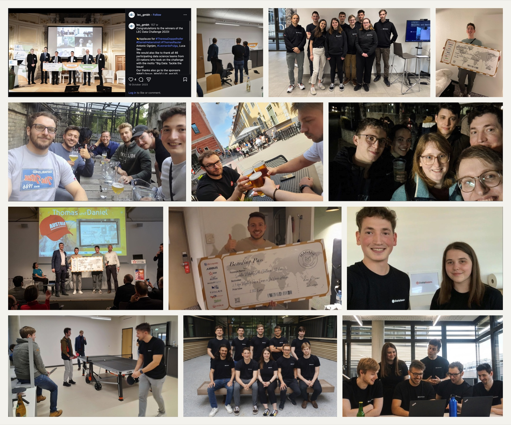

Machine learning challenges have been a practical way for me to test ideas, collaborate, and learn from a clearly defined problem.
Several of the most rewarding experiences grew out of the TU Graz Data Team, a student-led community where we organized meetups, shared methods, and entered competitions together.
Smarter Mobility Data Challenge
2023 · 1st of 169 participants
Together with Thomas Wedenig, I developed a solution for forecasting the occupancy of electric-vehicle charging stations across Paris at different aggregation levels. We presented the work at the award ceremony in Paris, and the challenge later contributed to a co-authored academic publication.
The Data Team was one of the most meaningful parts of my time at TU Graz. As president, I coordinated competition participation and organized meetups for students interested in data science and machine learning. Just as importantly, it was a place to work through ideas with other students and learn together.

Competitions, working sessions, meetups, and shared moments with the TU Graz Data Team